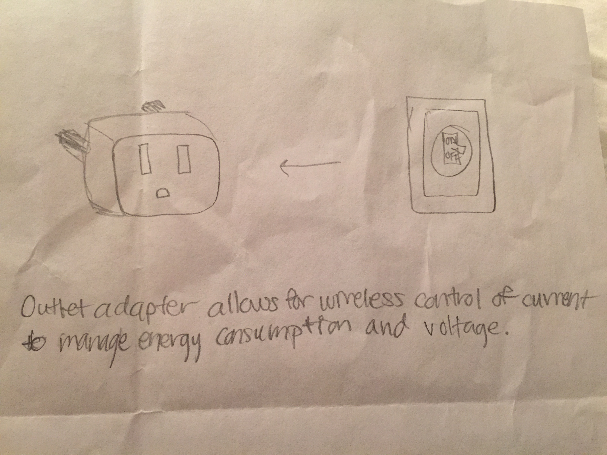

My project will use the Particle Photon to take data from a tide level API. Every half hour, it will pump water into a tank to reflect the current tide level as indicated by the API. It will also display the time on a small LCD screen. In order to complete this project, I will need to learn how to regularly take information from an API. I will also need to learn how to use and hook up the water pump and LCD screen, and I will need to be able to control them based on the API data. In order to overcome these challenges, I will first look through class tutorials on the LWHS TechArts Blog. If I cannot find the information I need in the class materials, I will search to see if any problems I have are common ones that others have asked and had answered online.
So far I have been searching for tide APIs that I can use to get the information I need to control my pump. I found one made available by the NOAA that takes data from stations in bodies of water. I chose a station in the San Francisco Bay and input all the information I need into the API address. This address gave me JSON code as shown in the picture. So far I have learned how to retrieve information from an API using the JSON format and a Photon. A challenge I see ahead is the hookup of the LCD screen and water pump. It will also be challenging to be able to integrate all the components together to create the tide tracker. When I resume this project, I will need to remember that I still need to figure out the enclosure for the tide tracker. I will also need to remember the station I used and how to get specific information I need from JSON code.